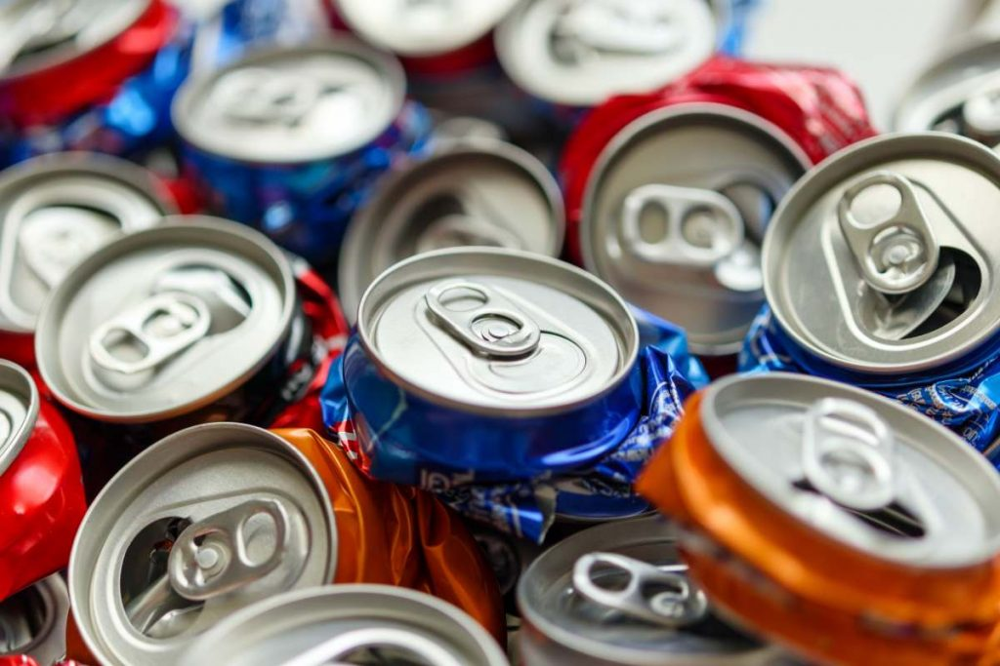
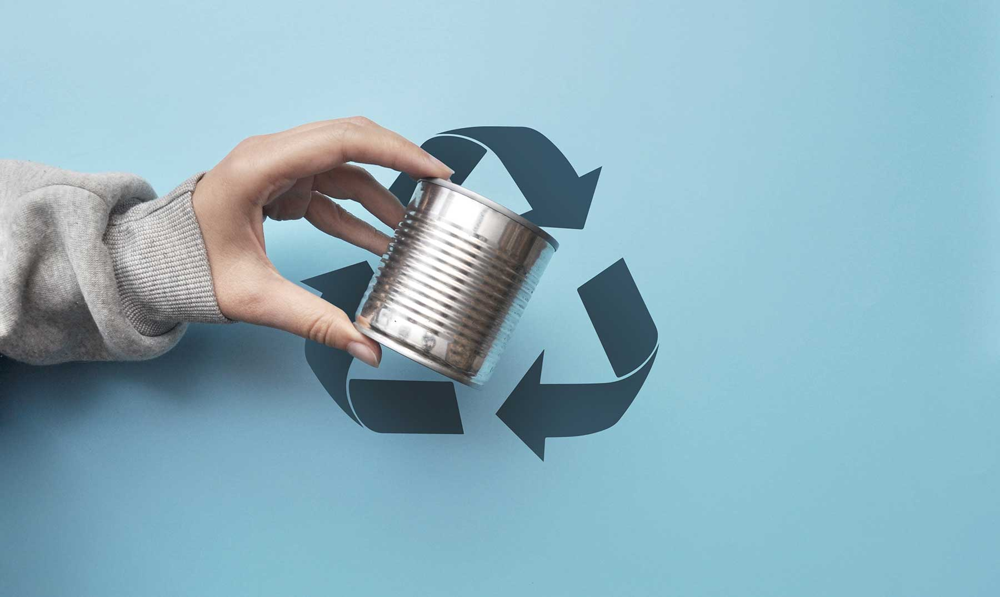

¿Por qué reciclar metales?
El reciclaje de metales permite conservar recursos no renovables, reducir la contaminación y disminuir el consumo energético asociado a la extracción de minerales.

Pasos para preparar los metales antes de reciclar
- Limpia los materiales: Asegúrate de eliminar residuos de alimentos y líquidos de latas y envases metálicos.
- Clasifica los metales: Separa los metales ferrosos (que se oxidan) de los no ferrosos (como aluminio y cobre).
- Aplana las latas: Aplasta las latas para ahorrar espacio y facilitar el transporte.
- Separa tapas y otros elementos: Si las latas tienen tapas de plástico, retíralas antes de reciclarlas.
Tipos de metales reciclables
Los metales más comunes que se pueden reciclar incluyen:
- Aluminio: Latas de bebidas, papel aluminio y envases ligeros.
- Acero: Latas de conservas, electrodomésticos y herramientas.
- Cobre: Cables eléctricos, tuberías y componentes electrónicos.
- Hierro: Chatarra de construcción, muebles metálicos y maquinaria.
- Bronce y latón: Accesorios de plomería y decoraciones.

¿Dónde llevar los metales?
Puedes llevar tus metales reciclables a cualquiera de nuestros Centros de Recolección. Disponemos de áreas dedicadas para su correcta disposición y clasificación.
Beneficios de reciclar metales
- Reducción de la necesidad de extraer nuevos minerales.
- Disminución de la contaminación del suelo y agua.
- Ahorro significativo de energía en los procesos de producción.
- Reutilización infinita sin pérdida de calidad en muchos metales.